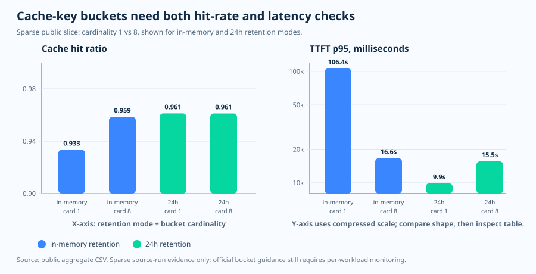

운영 에세이 · 프롬프트 캐싱과 라우팅 힌트
캐시 키는 라벨이 아니라 라우팅 힌트다
prompt_cache_key는 무해한 메타데이터로 오해하기 쉽습니다.
하지만 실제로는 그보다 훨씬 운영적인 값입니다. 프롬프트 프리픽스
해시와 결합되어 일치하는 작업이 어디로 라우팅될지에 영향을 줍니다.
좋은 키는 재사용을 모으고, 나쁜 키는 그것을 조각냅니다.
질문
공유 프롬프트 프리픽스는 몇 개의 캐시 키 버킷을 사용해야 할까요?
증거
Microsoft Learn은 라우팅 힌트와 대략적인 오버플로 지점을 정의하고, 이 저장소는 희소한 공개 측정을 더합니다.
결정
워크로드 단위로 버킷을 나누고, 버킷별 비율을 위험 구간 아래로 유지하며, 적중률과 첫 토큰 지연을 함께 모니터링하세요.
공식 동작 · 키가 바꾸는 것
캐시는 동일한 프리픽스에서 시작된다
Microsoft Learn에 따르면 프롬프트 캐싱에는 최소 1,024개의 입력 토큰이 필요하며 처음 1,024개 토큰이 동일해야 합니다. 초기 프리픽스는 라우팅을 위해 해시되고, 처음 1,024개 토큰 이후에는 추가 캐시 일치가 128개 토큰 단위로 발생합니다. 처음 1,024개 토큰 안에서 단 한 글자만 달라져도 캐시 적중이 미스로 바뀔 수 있습니다.
프리픽스가 먼저
반복되는 지시문, 스키마, 도구, 예시를 앞쪽에 두세요. 프리픽스가 바뀌면 뒤쪽 재사용은 덜 유용합니다.
키가 그다음
prompt_cache_key는 프리픽스 해시와 결합되어 반복 작업의 라우팅에 영향을 줍니다.
보장은 결코 없음
키는 재사용 확률을 높이지만 적중을 약속하지는 않습니다. 운영 힌트로 다루세요.
크기 산정 · 버킷을 위험 구간 아래로 유지
버킷 하나는 너무 뜨거울 수 있고, 너무 많으면 너무 차가울 수 있다
Microsoft Learn은 대략적인 오버플로 지점을 설명합니다. 동일한
프리픽스와 prompt_cache_key 조합이 분당 약 15개
요청을 초과하면 일부 요청이 추가 머신으로 라우팅되어 캐시
효율이 떨어질 수 있습니다. 실무적인 크기 산정 규칙은 공유
프리픽스를 충분히 안정적인 버킷으로 나누어 각 버킷이 여유를
두고 그 위험 구간 아래에 머무르도록 하는 것입니다.
버킷 개수 규칙
common_prefix_rpm = common_prefix_tps × 60
minimum_buckets = ceil(common_prefix_rpm / 15)
recommended_buckets = ceil(common_prefix_rpm / target_rpm_per_bucket)
계산 예시
1.4 TPS에서 공통 프리픽스는 84 RPM을 봅니다. 15-RPM 하한은 6개 버킷을, 10-RPM 목표는 9개를 줍니다.
왜 하나가 아닌가?
겉으로 보이는 프롬프트가 안정적이어도 단일 핫 버킷은 로컬 캐시 경로를 넘칠 수 있습니다.
왜 고유 키가 아닌가?
호출마다 고유한 키는 재사용이 쌓이는 것을 막습니다. 캐시는 결코 군중을 얻지 못합니다.
관측된 증거 · 희소한 공개 단면
적중률과 지연을 함께 측정하라

| 보존 | 카디널리티 | 적중률 | TTFT p95 | 버킷별 RPM |
|---|---|---|---|---|
| in-memory | 1 | 0.9334 | 106,389.96 ms | 30.65 |
| in-memory | 8 | 0.9586 | 16,623.66 ms | 4.00 |
| 24h | 1 | 0.9612 | 9,899.74 ms | 30.73 |
| 24h | 8 | 0.9612 | 15,549.08 ms | 4.00 |
이것이 증명하는 것과 증명하지 못하는 것
이 공개 단면은 보편적인 임계 곡선을 증명하지 않습니다. 다만 운영자가 적중률만 봐서는 안 되는 이유를 보여줍니다. 보존 모드, 버킷 비율, 첫 토큰 지연이 모두 사용자 경험을 움직입니다.
키 설계 · 안정적인 워크로드 버킷
호출이 아니라 워크로드 단위로 버킷을 나눠라
좋은 키는 동일한 워크로드에 대해 결정적이어야 합니다. 나쁜 키는 호출마다 달라지는 엔트로피를 담습니다. 타임스탬프, UUID, 무작위 접미사, 또는 고유한 호출 토큰이 키에 들어가면 캐시 키 공간이 폭발하고 프리픽스가 재사용을 쌓을 수 없습니다.
좋음
tenant:flow:locale:schema는 동일한 에이전트, 스키마, 로케일, 작업 형태를 함께 묶습니다.
나쁨
고유 id, 타임스탬프, 무작위 UUID, 원시 사용자 질문은 호출마다 버킷 하나를 만듭니다.
모니터링
버킷별 RPM, 캐시된 토큰 비중, 첫 토큰 지연을 추적하세요. 트래픽 형태가 바뀌면 크기를 조정하세요.
출처 및 증거의 경계
- 공식 사양, 2026-06-04 접속: Microsoft Learn 프롬프트 캐싱 가이드.
- 공개 집계 증거: 캐시 키 버킷팅 CSV.
- 공개 운영자 가이드: prompt-cache-key 정책 런북.
실무 규칙은 이렇습니다. 캐시 가능한 프리픽스를 안정적으로 유지하고, 여유를 둔 워크로드 버킷을 선택하며, 적중률 지표를 약속이 아니라 운영 신호로 다루세요.